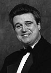

|  |
John Fullam, Principal Clarinetist of the Buffalo Philharmonic, was born in New York and holds Bachelor and Master of Music degrees from the Julliard School where he was a scholarship student of Joseph Allard, Principal Clarinetist of the Juilliard Concert Orchestra, and soloist with the Julliard Chamber Orchestra. He also holds a Diploma from the Mozarteum Akademie in Salzburg. His other teachers include Leon Russianoff, Anthon Gigliotti, Peter Simenaur, Pasquale Cardillo, and Harold Wright.
Mr. Fullam has appeared at the Saratoga Performing Arts Center with Eugene Ormandy, the Marlboro Festival with Pablo Casals and Rudolf Serkin, the Tanglewood Festival with Leonard Bernstein and Seiji Ozawa, the Roundtop Festival with Leon Fleisher, Artpark with Frederica von Stade, and at the Amalfi Coast Festival. He has also performed as soloist at Lincoln Center, Carnegie Hall, and with the London Festival Ballet.
Mr. Fullam is winner of the international competition held at the Teatro la Fenice for the principal clarinet position of the International Symphony of Venice. He is also winner of the U.S. National Arts Club Award, the Bergen Philharmonic Concerto Competition, the Diploma D’Honore from the Italian Government, the Massachusetts State Concerto Competition, the C.D. Jackson
Master Award, the U.S. Components Inc. Fellowship Grant, and was selected as soloist for the Berkshire Festival of contemporary Music. He was also featured artist and clinician for the Fourth National Clarinet Congress held at Massachusetts University.
Mr. Fullam can be heard on the Marlboro Recording Society Series, the Masters, Pickwick, Mark, and Pro Arte labels, and was invited to be solo clarinetist in the American premiere performance and first recording of Peter Maxwell Davies’ instrumental chamber opera, “Le Jongleur de Notre Dame” for Mode records. Mr. Fullam has also recorded for Radio Hong Kong and Venezuelan National Radio and Television. He has held principal and associate principal clarinet positions with the Band of America, the Caracas Philharmonic, the Utah Symphony, the Portland Symphony, the Boston Philharmonic, and the National Orchestral Association Orchestra with whom he played the Copland Clarinet Concerto under the composer’s direction.
As a teacher, Mr. Fullam has held the position of Professor of Clarinet for the Eastman School of Music, the Philharmonic Conservatory of Caracas, Atlantic Union College, the University of Utah, and the Boston Conservatory where he was also Director of Chamber Music. In addition to his current position with the Buffalo Philharmonic, Mr. Fullam is also Principal
Clarinetist of the Slee Sinfonietta, a member of the Buffalo Philharmonic Wind Quintet and the Roycroft Festival Chamber Players, and is Professor of Clarinet for the State Universities of New York (SUNY) at Buffalo and Fredonia. |